Do sensor ao servidor: acompanhe a organização em camadas e o percurso de uma mensagem entre dois sistemas.
Engenharia Elétrica · UFMA
Leitura estimada: 32 min
5 questões de revisão
Conceito
Ao final desta aula, você poderá…
Explicar como camadas organizam o problema da comunicação.
Distinguir protocolo, serviço e encapsulamento.
Relacionar as camadas TCP/IP às suas funções e PDUs.
Acompanhar encapsulamento e desencapsulamento.
Comparar OSI e TCP/IP e reconhecer os padrões citados.
Resumo
Nesta aula
Dividir o problema para organizar a comunicação
Sensores, CLPs e servidores precisam trocar dados mesmo sendo de fabricantes diferentes.
Conceito
Por que camadas?
Abstração:
esconder detalhes de implementação.
Modularidade:
organizar funções separadamente.
Interoperabilidade:
seguir regras compartilhadas.
Facilidade de projeto:
dividir a complexidade.
Conceito
Protocolo × serviço
Protocolo:
regras de formato, ordem e significado das mensagens entre entidades.
Serviço:
funcionalidade que uma camada oferece à camada superior.
O protocolo relaciona pares remotos; o serviço relaciona camadas no mesmo sistema.
Conceito
Endereçar e encapsular
Endereçamento:
identifica origem e destino da comunicação.
Encapsulamento:
envolve dados recebidos da camada superior com informações de controle da camada inferior.
Analogia
Um idioma compartilhado
A imagem original compara computadores e pessoas: a comunicação exige regras sobre linguagem, perguntas, respostas e direção da fala. Trocar sinais só faz sentido quando os participantes conseguem interpretá-los.
Exemplo
Contexto industrial
Os diagramas apresentam manufatura, sensores, CLPs, interfaces de operação, switches, servidores e nuvem. A organização em camadas permite estudar funções comuns em sistemas diferentes.
Conceito
Uma mudança sem desmontar tudo
A modularidade permite tratar partes do sistema separadamente. O material destaca a independência das camadas; o serviço oferecido funciona como a referência de uso para a camada acima.
As funções do modelo TCP/IP
A aula detalha cinco camadas; o menu reúne Enlace e Física no mesmo módulo.
Conceito
Camadas, funções e PDUs
Camada
O que resolve
PDU no PDF
Exemplos do PDF
5 · Aplicação
Protocolos usados pelas aplicações
Mensagem
HTTP, DNS, SMTP, FTP
4 · Transporte
Comunicação processo a processo; portas
Segmento*
TCP, UDP
3 · Rede
Comunicação entre hosts através da rede
Datagrama / pacote
IP, ICMP, ARP*
2 · Enlace
Comunicação entre nós vizinhos
Quadro
Ethernet, Wi-Fi
1 · Física
Bits representados por sinais no meio
Bits
Cabos, rádio, fibra
PDU
é a unidade de dados apresentada em cada camada. Os asteriscos identificam classificações assinaladas para revisão abaixo.
Conceito
Aplicação e Transporte
A Aplicação reúne protocolos utilizados pelas aplicações. O Transporte relaciona a comunicação aos processos, usando portas para chegar à aplicação correta.
Conceito
Rede e Enlace
A Rede trata o deslocamento de pacotes entre hospedeiros. O Enlace organiza a comunicação local entre dois nós diretamente conectados: um salto do caminho.
Conceito
Física
Movimenta bits codificados em sinais elétricos, ópticos ou de rádio. É a parte da descrição que se relaciona diretamente ao meio de transmissão.
Atenção
Nota para revisão do professor
O PDF usa “Segmento” para TCP e UDP e inclui ARP na camada de Rede. Essas classificações são mantidas como registros do material, com revisão solicitada ao professor. A representação geral em quatro camadas e o detalhamento em cinco aparecem no próprio arquivo.
Uma mensagem, diferentes unidades de dados
No emissor, a mensagem desce a pilha. No receptor, o processo é percorrido em sentido inverso.
Analogia
A analogia dos envelopes
Cada camada envolve os dados em informações de controle, como envelopes colocados sobre uma carta. O conteúdo da aplicação é preservado no esquema didático, enquanto novos cabeçalhos são acrescentados.
Conceito
Encapsular
Aplicação: mensagem.
Transporte: segmento no exemplo.
Rede: datagrama.
Enlace: quadro.
Física: transmissão de bits como sinais.
Conceito
Desencapsular
No destino, as informações de controle são retiradas à medida que os dados sobem a pilha. A mensagem original chega à aplicação receptora.
Na prática
Explore o percurso, etapa por etapa
Representação de uma mensagem no exemplo TCP/IP do material. Cabeçalhos e FCS não estão em escala.
Conceito
Comunicação virtual entre pares
A camada de Aplicação parece conversar com sua correspondente no outro host; o mesmo vale para as demais. Essa é a comunicação lógica. O percurso efetivo passa pelas camadas inferiores e pelo meio físico.
OSI: sete camadas como referência
O material apresenta o esforço de padronização internacional e compara sua organização com TCP/IP.
Conceito
Origem e propósito
O PDF situa a proposta OSI no esforço da ISO iniciado ao final da década de 1970, diante da diversidade de redes comerciais. O modelo organiza a comunicação em sete camadas.
Resumo
Sete camadas
7 · Aplicação
6 · Apresentação
5 · Sessão
4 · Transporte
3 · Rede
2 · Enlace
1 · Física
Conceito
Por que TCP/IP prevaleceu?
A explicação do material enfatiza a adoção prática: TCP/IP já estava implementado e funcionando na ARPANET/Internet enquanto OSI era desenvolvido como especificação.
Resumo
Correspondência entre os modelos
OSI
Função apresentada nas figuras
TCP/IP no agrupamento do site
Aplicação
Aplicações de rede
Aplicação
Apresentação
Formatação e criptografia
Aplicação
Sessão
Estabelecimento e manutenção de sessões
Aplicação
Transporte
Comunicação ponta a ponta
Transporte
Rede
Entrega de pacotes e roteamento
Rede
Enlace
Quadros e checagem de erros
Enlace / Física
Física
Transmissão de bits no meio
Enlace / Física
No detalhamento de cinco camadas, Enlace e Física aparecem separadas. O agrupamento do menu é uma escolha de organização da disciplina.
Atenção
Nota para revisão do professor
Uma figura da aula associa “garantia de entrega” à camada de Transporte e lista TCP/UDP conjuntamente. O alcance dessa afirmação precisa de revisão. O quadro acima usa a descrição geral de comunicação ponta a ponta, preservando a figura original na galeria.
Padrões e protocolos
Organizações e exemplos citados no material.
Conceito
ISO
A organização apresentada como responsável pela proposta do modelo de referência OSI, usado para ensinar e comparar arquiteturas de rede.
Conceito
ITU-T
O material cita as séries X, relacionadas a redes de dados, e Y, relacionadas à infraestrutura Internet, na discussão sobre padronização.
Conceito
IEEE 802
802.3 — Ethernet.
802.11 — Wi-Fi.
802.15 — PAN sem fio, com Bluetooth e ZigBee citados.
802.16 — WiMAX.
Exemplo
Exemplos por camada — como aparecem no PDF
Camada
Protocolos e tecnologias citados
Aplicação
HTTP, HTTPS, DNS, FTP, SMTP, Modbus, DNP3
Transporte
TCP, UDP, SSL/TLS*
Rede
IP, ARP*, ICMP, OSPF
Enlace
Ethernet, 802.11, VLAN, PPP
Física
RS-232, RJ45, fibra óptica, DSL, rádio (802.11)
Atenção
Nota para revisão do professor
A tabela do PDF coloca SSL/TLS em Transporte, enquanto outra figura associa TLS à Apresentação no OSI. A lista também mistura protocolos, tecnologias e conectores. Esses itens permanecem identificados para revisão. A expressão “Ethernet/IP” no trecho industrial não esclarece se nomeia a tecnologia industrial ou a combinação de Ethernet e IP.
Enxergue as camadas em uma rede real
As imagens complementares conectam o modelo conceitual a dispositivos e ferramentas.
Na prática
Switches e roteadores
O material relaciona switches à camada de Enlace e ao endereço MAC; relaciona roteadores à camada Internet/Rede e ao endereço IP. Uma figura mostra três redes locais interligadas por roteadores.
Na prática
Wireshark
A captura original mostra uma troca HTTP e a inspeção das informações de Ethernet, IP e TCP. É um exemplo visual de como as camadas aparecem em uma análise de pacotes.
Consulte a imagem na galeria; o material não apresenta um roteiro completo de laboratório.
Na prática
Simulação de topologias
A imagem do GNS3 acompanha uma descrição de projeto e análise de redes, execução nativa ou em máquinas virtuais e interação de elementos simulados com a rede física.
Exemplo
RS-232, modems e cabeamento
A aula inclui um diagrama de troca de sinais entre terminais e modems, imagens de pares trançados e racks e a visualização de um sinal em osciloscópio. Esses registros ficam disponíveis na galeria para consulta.
Atenção
Nota para revisão do professor
A figura comparativa de switch e roteador rotula ambos como “Rede: Local”, sem explicar o contraste com o diagrama de interligação de redes. A legenda original foi preservada na galeria para revisão.
Resumo da aula
Conecte funções, unidades e percurso.
Resumo
O essencial
Camadas organizam a comunicação por funções.
Serviço é oferecido à camada superior; protocolo relaciona pares.
A aula detalha cinco camadas TCP/IP e também mostra o agrupamento em quatro.
Encapsular adiciona informações de controle; desencapsular as retira.
OSI usa sete camadas, com correspondências ao TCP/IP.
Os exemplos industriais, dispositivos e ferramentas ajudam a reconhecer essas funções.
Verifique seu entendimento
Questões adaptadas do material. Escolha uma resposta e confira a explicação.
Responda no seu ritmo. As respostas não são enviadas.
Pratique com o material original
Enunciados e gabaritos preservados. As quebras de linha foram adaptadas ao formato de leitura.
Exercício
Exercícios e respostas
Atividades 1 e 2 — camadas e comparação dos modelos
PARA PRATICAR
Atividades e Próxima Aula
Atividade 1
Escolha uma aplicação industrial (ex.: leitura
de um sensor via Modbus/TCP) e descreva o
caminho dos dados por todas as camadas do
modelo TCP/IP , do transmissor ao receptor.
Atividade 2
Compare o modelo OSI e o modelo TCP/IP:
quais camadas do OSI são agrupadas no
TCP/IP? Por que o TCP/IP prevaleceu na
prática?
PRÓXIMA AULA
Endereçamento e Protocolos de Rede
Endereços MAC e IP , sub-redes e o papel de switches e roteadores em cada camada.
Material original · páginas 29 do PDF.
Orientação para as atividades
O PDF não traz gabarito para as duas atividades finais.
Exercício
Como organizar sua resposta
Na Atividade 1, percorra as camadas na ordem de envio e depois na ordem de recepção. Na Atividade 2, use a tabela de correspondência e a explicação de adoção prática presente na aula. Esta orientação é uma adaptação didática, não um gabarito original.
Atenção
Nota para revisão do professor
A capa identifica “Comunicação de Dados e Redes Industriais (CEEB0048)”; o site usa “Redes de Computadores”, conforme a organização solicitada. O anúncio de próxima aula no PDF é “Endereçamento e Protocolos de Rede”. Nesta entrega, não existe Aula 04 publicada: o botão de próxima aula permanece desabilitado.
Figuras do material
Registros e exemplos visuais preservados para consulta, com os rótulos do original.
Exemplo
Galeria de apoio
Abrir 14 figuras comentadas
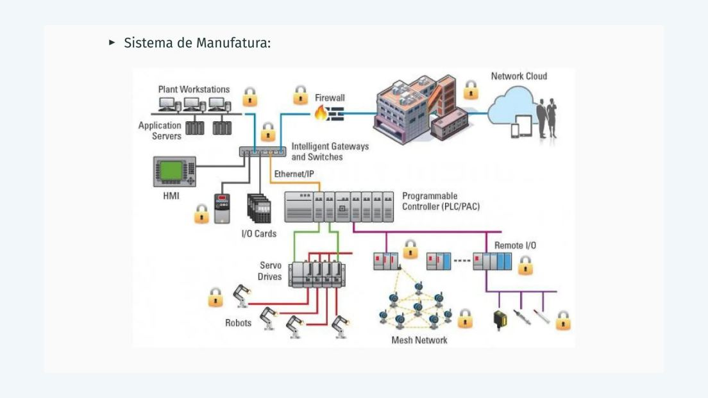
Sistema de manufatura com controladores, servidores, gateways e dispositivos de campo. · página 3 do PDF original.
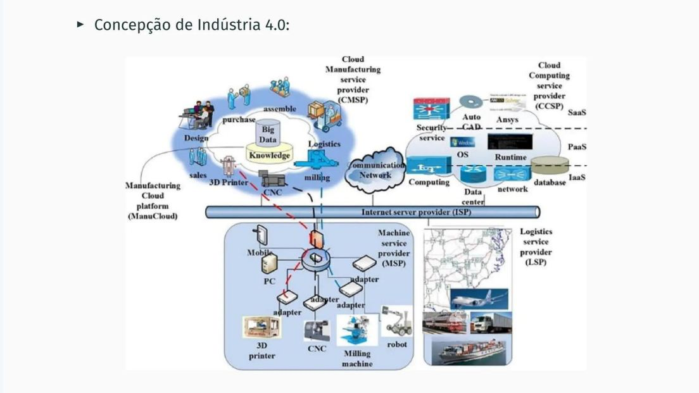
Concepção de Indústria 4.0 conectando manufatura e serviços de nuvem. · página 4 do PDF original.
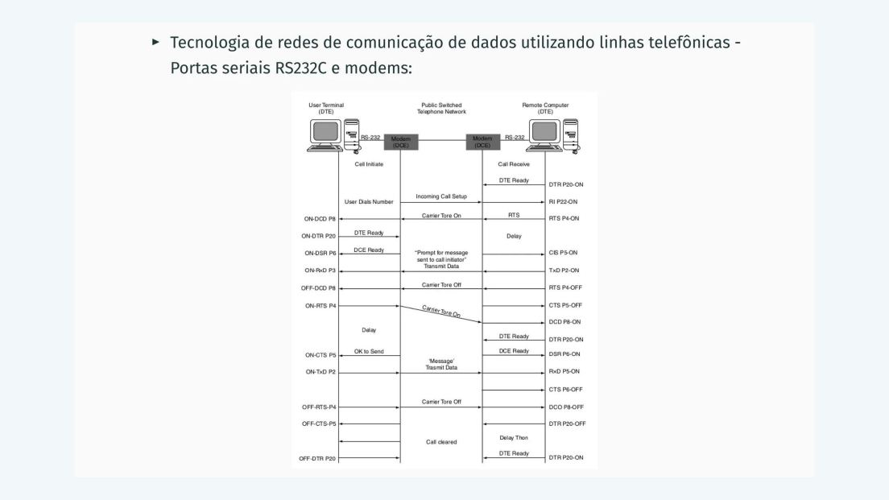
Sequência de comunicação por RS-232C e modems sobre rede telefônica. · página 7 do PDF original.
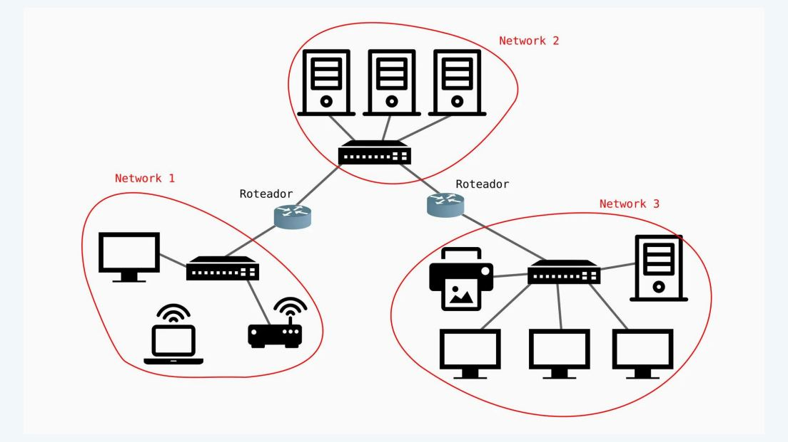
Três redes interligadas por roteadores. · página 9 do PDF original.
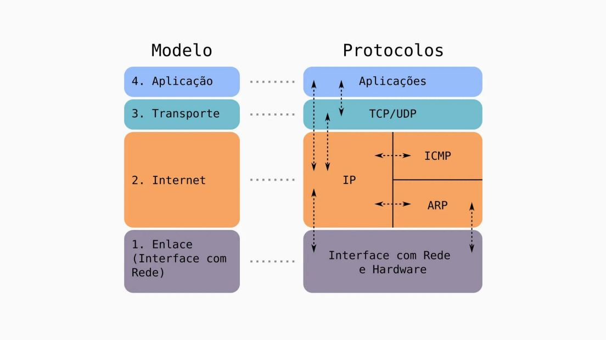
Modelo TCP/IP agrupado em quatro camadas e protocolos associados. · página 11 do PDF original.
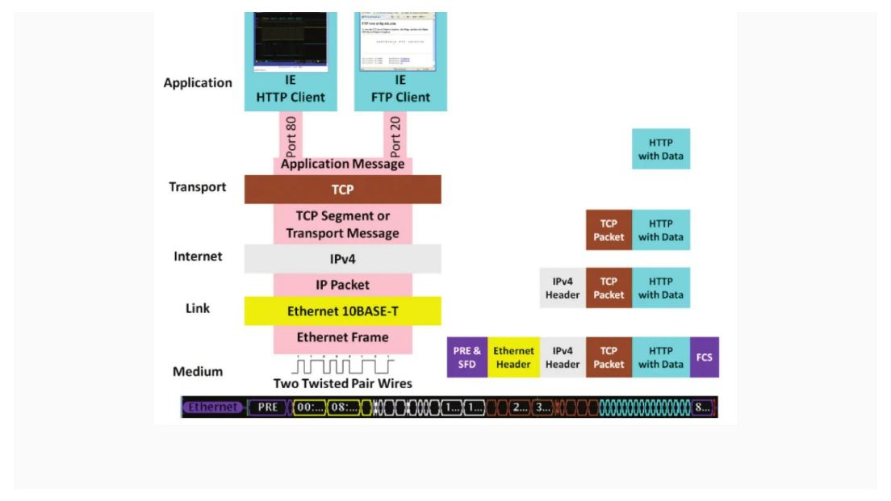
Exemplo original de encapsulamento HTTP, TCP, IPv4 e Ethernet, incluindo FCS. · página 14 do PDF original.
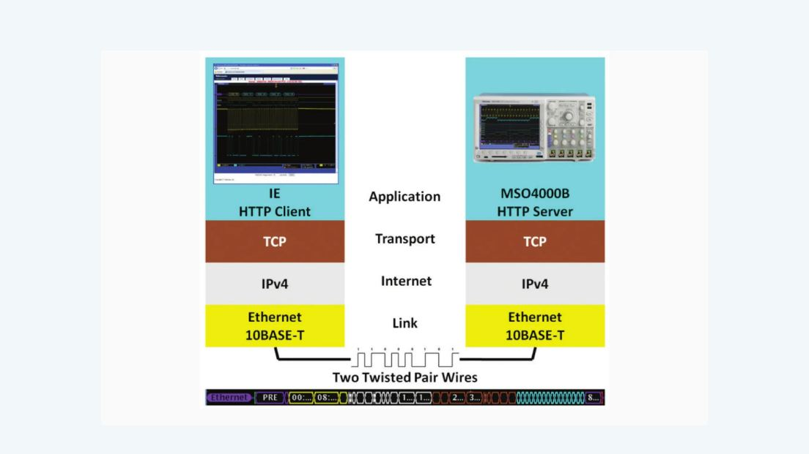
Cliente HTTP e servidor HTTP em um instrumento, conectados por Ethernet. · página 16 do PDF original.
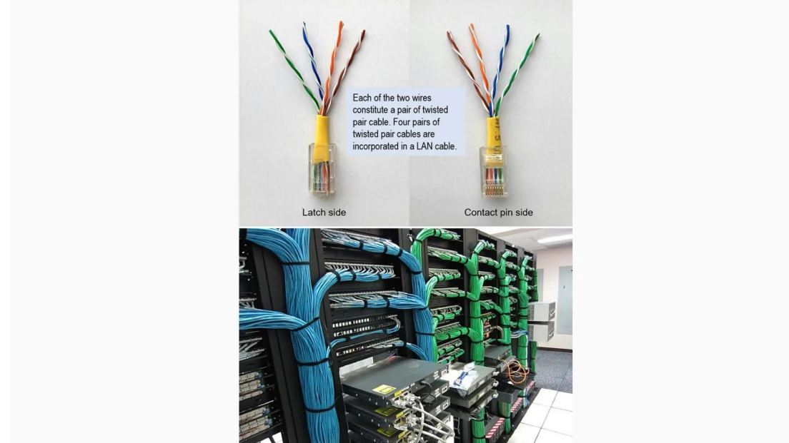
Pares trançados, conectores e organização de cabos em rack. · página 17 do PDF original.
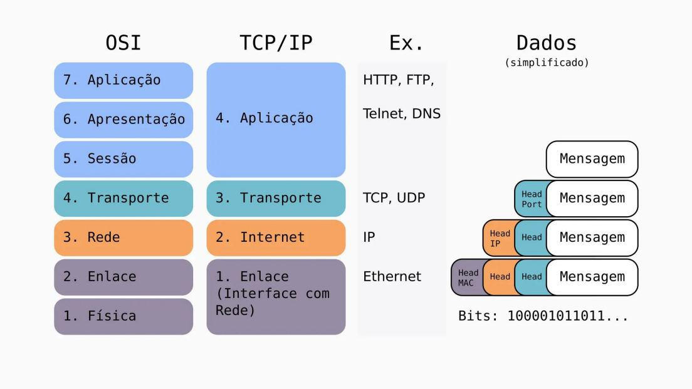
Comparação visual OSI/TCP-IP e unidades de dados. · página 19 do PDF original.
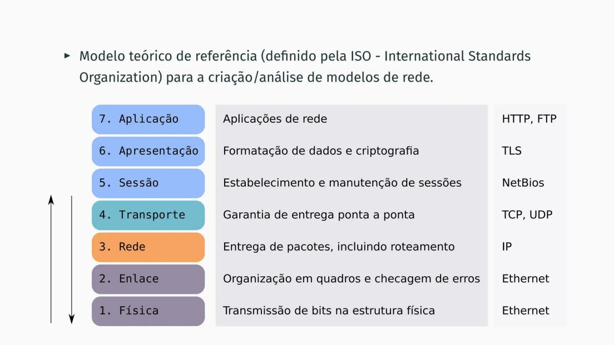
Sete camadas OSI, funções e exemplos; classificações sujeitas às notas de revisão. · página 20 do PDF original.
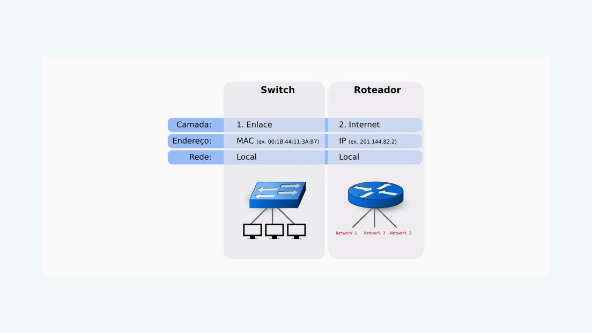
Quadro original de switch e roteador, com rótulos a revisar. · página 22 do PDF original.
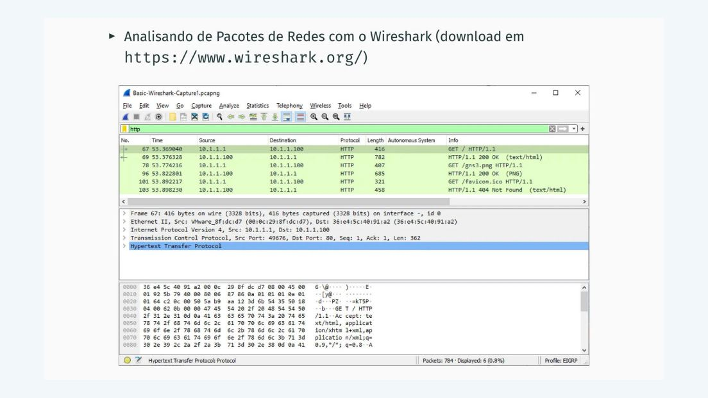
Captura de análise de pacotes no Wireshark. · página 23 do PDF original.
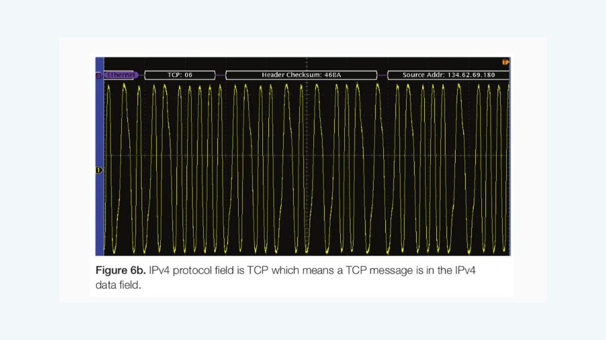
Sinal observado em osciloscópio com interpretação de campos de Ethernet, IP e TCP. · página 24 do PDF original.
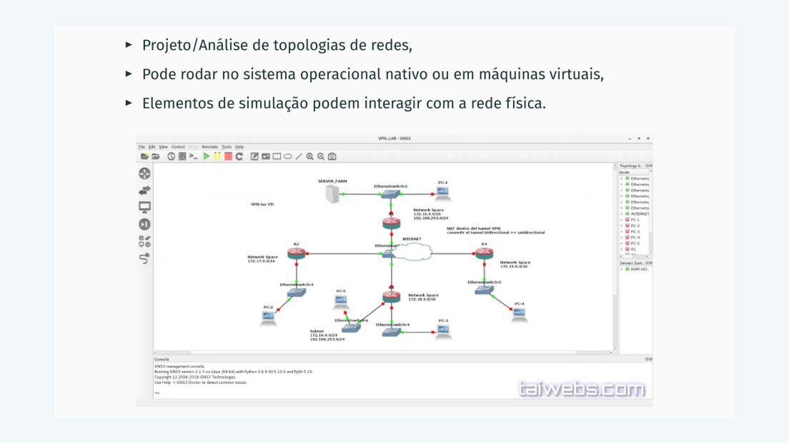
Exemplo de topologia em ambiente GNS3. · página 27 do PDF original.
Para saber mais
Somente referências presentes nos arquivos fornecidos.
A Aula 03 não inclui uma bibliografia formal. ISO, ITU-T e IEEE 802 são mencionados no conteúdo; não foram acrescentados livros, RFCs ou links de normas não fornecidos.